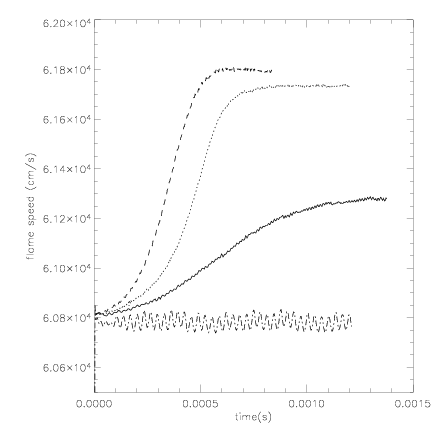

(Bell, J. B., Day, M. S., Rendleman, C. A., Woosley, S. E. & Zingale, M. A. 2004, ApJ, 606, 1029. [astro-ph preprint] )
in collaboration with the CCSE/LBL group.
Results for a 4.e7 g/cc C/O Landau-Darrius unstable flame.
Planar flames are intrinsically unstable in open domains due to the thermal expansion across the burning front---the Landau-Darrieus instability. This instability leads to wrinkling and growth of the flame surface, and corresponding acceleration of the flame, until it is stabilized by cusp formation. We look at the Landau-Darrieus instability for C/O thermonuclear flames at conditions relevant to the late stages of a Type Ia supernova explosion. Two-dimensional direct numerical simulations of both single-mode and multi-mode perturbations using a low Mach number hydrodynamics code are presented. We show the effect of the instability on the flame speed as a function of both the density and domain size, demonstrate the existence of the small scale cutoff to the growth of the instability, and look for the proposed breakdown of the non-linear stabilization at low densities. The effects of curvature on the flame as quantified through measurements of the growth rate and computation of the corresponding Markstein number. While accelerations of a few percent are observed, they are too small to have any direct outcome on the supernova explosion.
MPEG-4 movie of a flame cusping. The y-velocity is shown. Inflow boundary conditions inject fuel into the bottom of the domain at the laminar flame speed, so the unperturbed flame should remain stationary. The domain is 384 cm on edge.
Flame speed as a function of time for four different domain widths: 2.56 cm (dot-dash), 5.12 cm (solid), 10.24 cm (dash), and 20.48 cm (dot). The 5.12 cm domain is 83 flame thicknesses wide (dT/max{grad T}), right on the predicted small scale cutoff for L-D growth for these astrophysical flames (Dursi et al. 2003). The smallest domain wide run does not grow at all.
